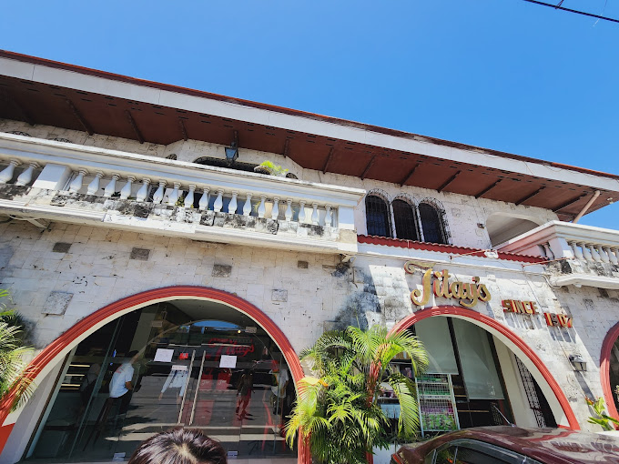
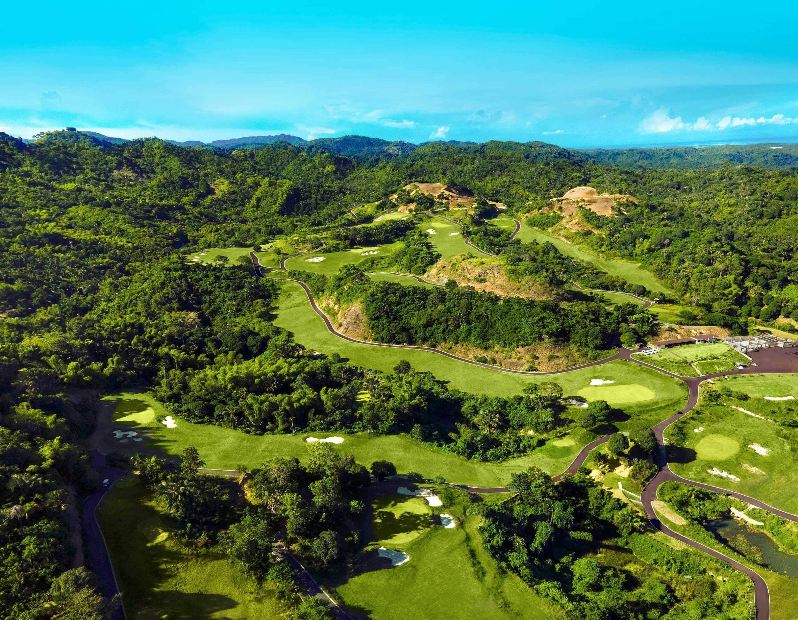
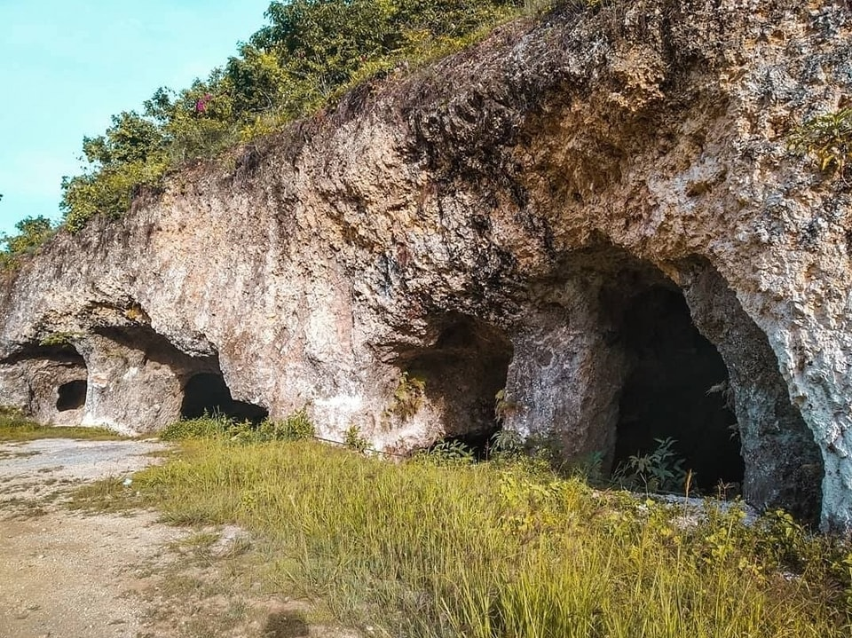
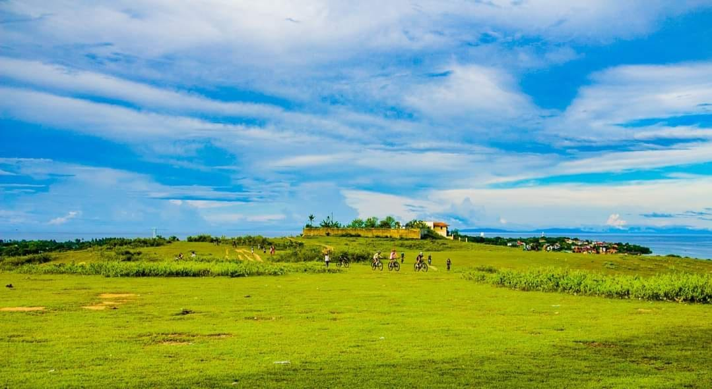
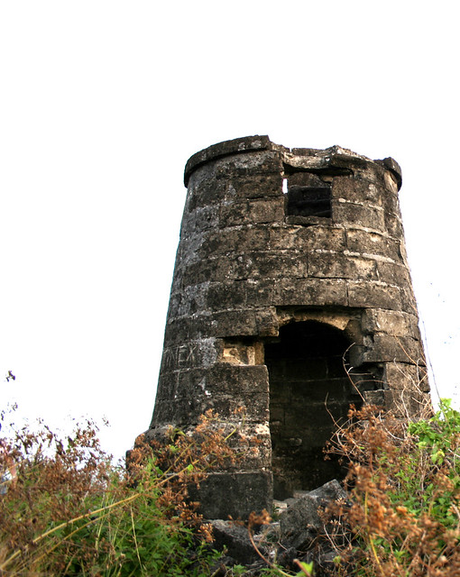
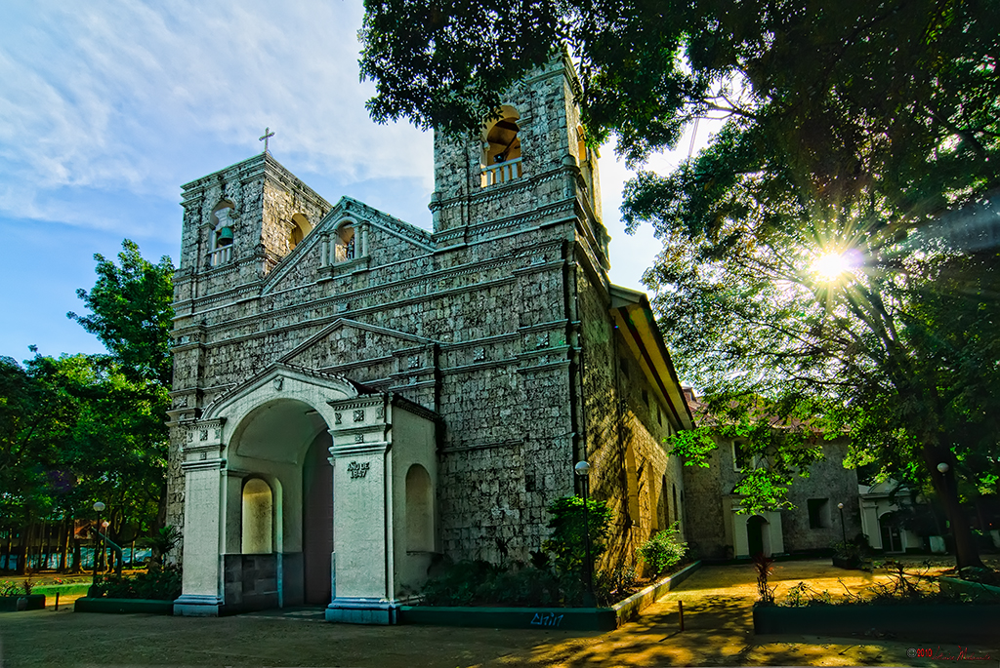
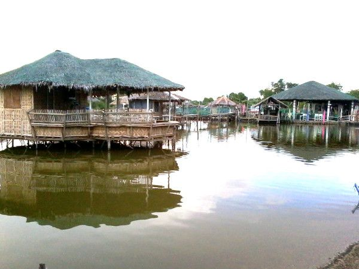

A PLACE FOR EVERY KIND OF WANDERER
Go where you
feel something.
Coastal landmarks, quiet hills, and little adventures.
Discover
the places that make Liloan, Liloan.
12 places to discover
 Heritage
Heritage
Bagacay Point Lighthouse
Follow the light. Find a little perspective.
 Nature
Nature
Lataban Hills
Trade the city noise for wide-open green.
 Adventure
Adventure
Papa Kit’s Marina
Make a little room for adventure.
 Heritage
Heritage
Liloan Municipal Hall
A glimpse into the heart of the town.

FoodTitay’s Rosquillos
Take home a delicious piece of Liloan.
 Nature
Nature
Mulao Stone Ark
Discover nature’s own sculptural masterpiece.

AdventureLiloan Golf Course
Unwind among rolling green landscapes.

NatureLataban Manmade Cave
Step into a quieter chapter of local history.

NatureApollo’s View
Take the scenic route to a new perspective.

HeritageBantayan sa Hari
Stories of the coast, written in stone.

HeritageSan Fernando Rey Church
A place of faith, history, and quiet reflection.

AdventureD’Pond Family Fishing
Slow afternoons are better spent together.
No places found. Try another name or category.